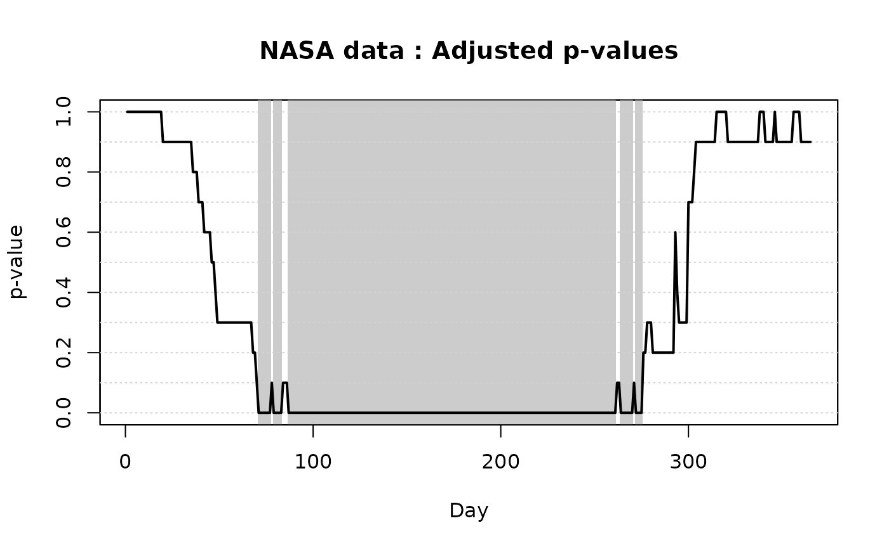

Plot method for ITP results on two-population tests
plot.ITP2.Rdplot method for class "ITP2". Plotting function creating a
graphical output of the ITP for the test of comparison between two
populations: functional data and ITP-adjusted p-values are plotted.
Arguments
- x
The object to be plotted. An object of class "
ITP2", that is, a result of an ITP for comparison between two populations. Usually a call toITP2bspline,ITP2fourierorITP2pafourier.- xrange
Range of the
xaxis. Default isxrange=c(0,1).- alpha1
First level of significance used to select and display significant differences. Default is
alpha1 = 0.05.- alpha2
Second level of significance used to select and display significant differences. Default is
alpha1 = 0.01.alpha1andalpha2are s.t.alpha2 < alpha1. Otherwise the two values are switched.- ylab
Label of
yaxis of the plot of functional data. Default is "Functional Data".- main
An overall title for the plots (it will be pasted to "
Functional Data" for the first plot and "adjusted p-values" for the second plot).- lwd
Line width for the plot of functional data.
- col
Color used to plot the functional data.
- pch
Point character for the plot of adjusted p-values.
- ylim
Range of the
yaxis.- ...
Additional plotting arguments that can be used with function
plot, such asgraphical parameters(seepar).
Value
No value returned. The function produces a graphical output of the
ITP results: the plot of the functional data and the one of the adjusted
p-values. The basis components selected as significant by the test at level
alpha1 and alpha2 are highlighted in the plot of the adjusted
p-values and in the one of functional data (in case the test is based on a
local basis, such as B-splines) by gray areas (light and dark gray,
respectively). In the case of a Fourier basis with amplitude and phase
decomposition, two plots of adjusted p-values are done, one for phase and
one for amplitude.
References
A. Pini and S. Vantini (2017). The Interval Testing Procedure: Inference for Functional Data Controlling the Family Wise Error Rate on Intervals. Biometrics 73(3): 835–845.
Pini, A., & Vantini, S. (2017). Interval-wise testing for functional data. Journal of Nonparametric Statistics, 29(2), 407-424.
Pini, A., Vantini, S., Colosimo, B. M., & Grasso, M. (2018). Domain‐selective functional analysis of variance for supervised statistical profile monitoring of signal data. Journal of the Royal Statistical Society: Series C (Applied Statistics) 67(1), 55-81.
Abramowicz, K., Hager, C. K., Pini, A., Schelin, L., Sjostedt de Luna, S., & Vantini, S. (2018). Nonparametric inference for functional‐on‐scalar linear models applied to knee kinematic hop data after injury of the anterior cruciate ligament. Scandinavian Journal of Statistics 45(4), 1036-1061.
See also
ITPimage for the plot of p-values heatmaps. See also
ITP2bspline, ITP2fourier,
ITP2pafourier to perform the ITP to test for differences
between two populations. See plot.ITP1 and
plot.ITPlm for the plot method applied to the ITP results of
one-population tests and a linear models, respectively.
Examples
# Performing the ITP for two populations with the B-spline basis
ITP.result.bspline <- ITP2bspline(
NASAtemp$milan, NASAtemp$paris,
nknots = 30, B = 10L
)
# Plotting the results of the ITP
plot(
ITP.result.bspline,
xlab = 'Day',
xrange = c(1, 365),
main = 'NASA data'
)

# Selecting the significant components for the radius at 5% level
which(ITP.result.bspline$adjusted.pval < 0.05)
#> integer(0)